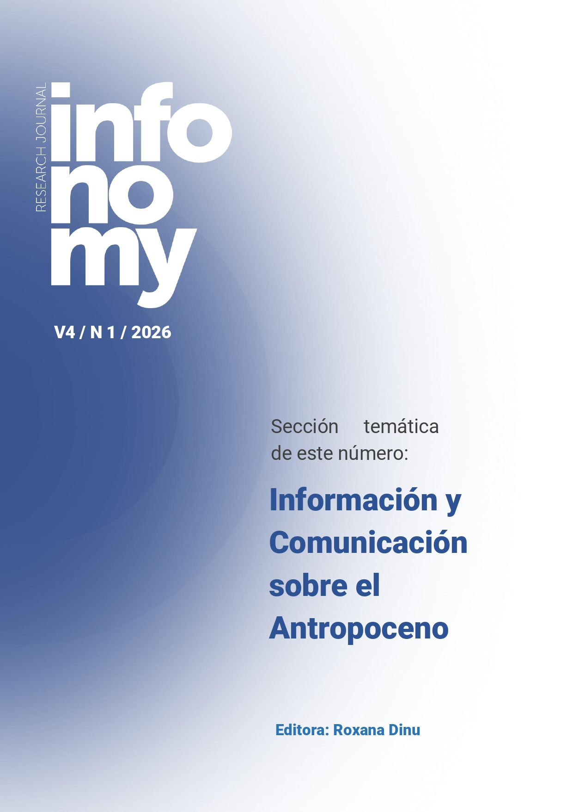
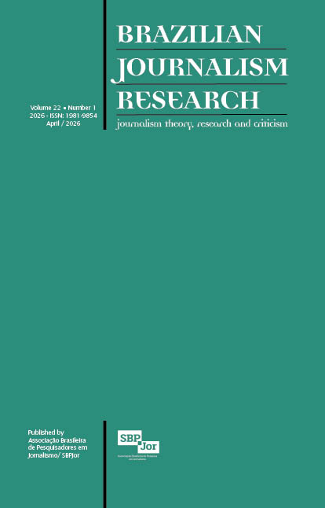
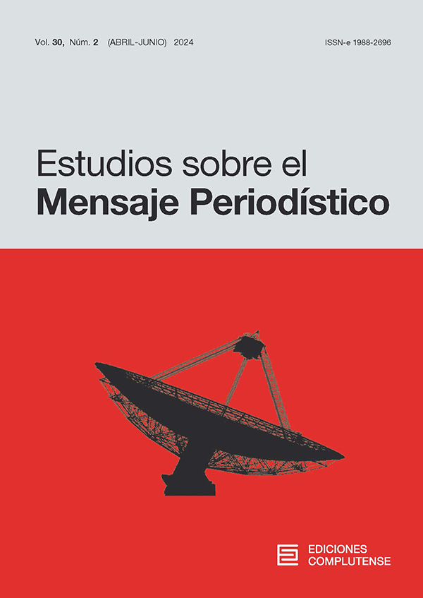

Communication scholar specializing in digital media, social media platforms and online polarization. My research focuses on how digital platforms shape public discourse and media narratives, using methods such as sentiment analysis and digital discourse analysis.
I have over five years of university teaching experience and have supervised more than 25 Bachelor's theses in journalism, marketing and Human Resources programs.
Interests
- Sport communication
- Digital media and social platforms
- Online polarization
- Sentiment analysis
- Digital discourse analysis
- Gender equality in sport
Education
Selected Publications

2026
From hero to villain, and vice versa: media polarization and discursive dynamics in X regarding the #ObjetivoNadal case
Infonomy
View article
View article

2026
Digital media and gender equality in sport: an approach to polarization through the media coverage of Rafael Nadal's interview on the El Objetivo show
Brazilian Journalism Research
View article
View article

2025
Sport and polarization on X: sentiment analysis applied to the #ObjetivoNadal interview
Estudios sobre el Mensaje Periodístico
View article
View article